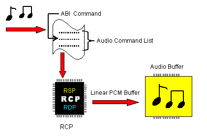
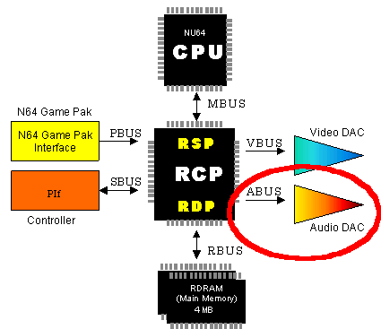

The CPU completes these steps:
The RSP completes these steps:
The following illustration shows the process:

The AI process transfers the waveform data from the audio buffer to the audio DAC (digital-to-analog converter).
In the audio DAC, the digital waveform data is converted to an analog audio signal and output as illustrated here:

Nintendo® Confidential
Copyright © 1999
Nintendo of America Inc. All Rights Reserved
Nintendo and N64 are registered trademarks of Nintendo
Last Updated March, 1999